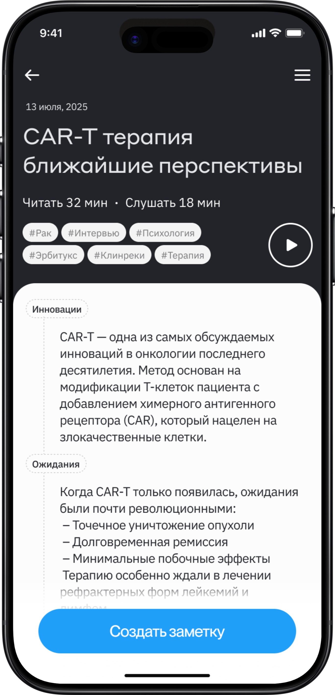
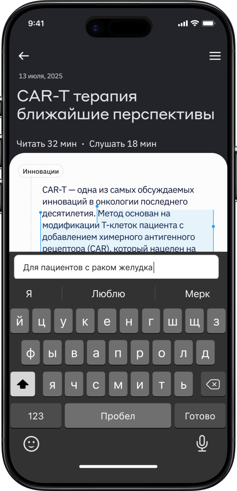
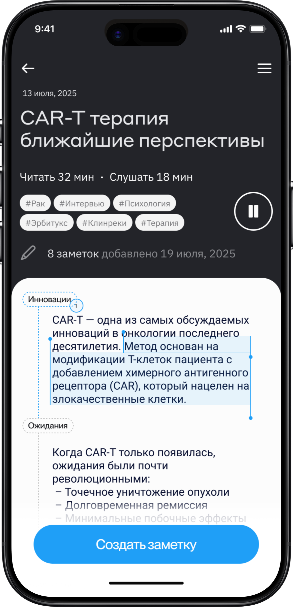
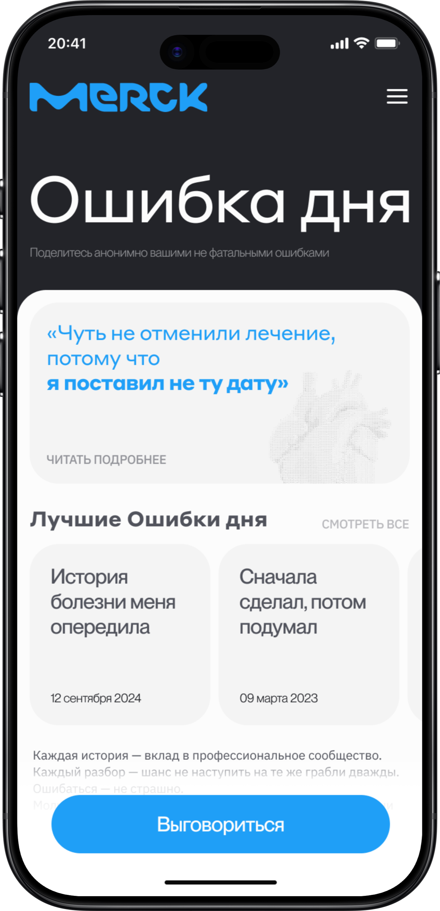

W1 — B2B · Freelance
Precheck — Medical Copilot
A calm pre-visit intake that collects patient history before the appointment, so the doctor arrives already informed.
UX Researcher · Product Designer
Research · UI · IA · Flow design
Aug 2025 – Nov 2025
Preview case study →
W2 — Case study · B2C
Merck Oncology
A companion for oncologists at work — clinical tools, a knowledge hub, and room for the emotional weight of the job.
Project Manager · UX Researcher · Product Designer
Research · UI design · prototyping
Apr 2025 – Jul 2025
Preview case study →




